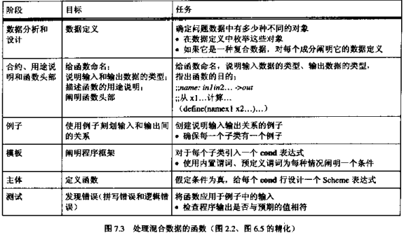

Contents
数据混合与区分
之前设计的函数都是只能处理一种类型的数据。
这章要讲的是同一个函数如何能处理不同的类型的数据。
其实很简单，在函数的开头， 通过一定的方法先判断一下传入的数据属于哪一类型即可。
(define PI 3.14) (define-struct square (nw length)) ;; nw为posn结构体， length为数值 (define-struct circle (center radius)) ;; center为posn结构体， radius为数值 ;; perimeter: a-shape -> number ;; 传入一个图形来获取其周长（只支持正方形、圆形） (define (perimeter a-shape) (cond ((square? a-shape) (* (square-length a-shape) 4)) ((circle? a-shape) (* 2 (circle-radius a-shape) PI))))
习题7.1.3
;; area: a-shape -> number ;; 传入一个图形来获取其面积（只支持正方形、圆形） (define (area a-shape) (cond ((square? a-shape) (sqr (square-length a-shape))) ((circle? a-shape) (* (sqr (circle-radius a-shape)) PI))))
设计处理混合数据的函数
习题7.2.1
(define-struct spider (legs space)) (define-struct elephant (space)) (define-struct monkey (intelligence space)) ;; animal是下列三者之一 ;; 1. 结构体：(make-spider l s) ;; l为数值，s为数值 ;; 2. 结构体：(make-elephant s) ;; s为数值 ;; 3. 结构体：(make-monkey (i s)) ;; i为数值，s为数值 ;; 模板 ;; (define (f a-animal) ;; (cond ;; ((spider? a-animal) ...(spider-space a-animal)...) ;; ((elephant? a-animal) ...(elephant-space a-animal)...) ;; ((monkey? a-animal) ...(monkey-space)...))) ;; fits?: animal, number -> boolean ;; 判断笼子是否能容得下一个动物 (define (fits? animal cage-area) (cond [(spider? animal) (= (spider-space animal) cage-area)] [(elephant? animal) (= (elephant-space animal) cage-area)] [(monkey? animal) (= (monkey-space animal) cage-area)])) ;; 测试 (fits? (make-spider 6 10) 500) (fits? (make-elephant 10000) 5000) (fits? (make-monkey 30 1000) 800)
习题7.2.2
(define-struct bus (area passengers)) (define-struct luxurycar (area passengers)) (define-struct coach (area passengers)) (define-struct subway (area passengers)) ;; vehicle是以下四者之一 ;; 1. 结构体：(make-bus a p) ;; a, p都为数值 ;; 2. 结构体：(make-luxurycar a p) ;; a, p都为数值 ;; 3. 结构体：(make-coach a p) ;; a, p都为数值 ;; 4. 结构体：(make-subway a p) ;; a, p都为数值 ;; 模板 ;; (define (f a-vehicle) ;; (cond ;; [(bus? a-vehicle) ;; ...(bus-area a-vehicle)... ;; ...(bus-passengers a-vehicle)...] ;; [(luxurycar? a-vehicle) ;; ...(luxurycar-area a-vehicle)... ;; ...(luxurycar-passengers a-vehicle)...] ;; [(coach? a-vehicle) ;; ...(coach-area a-vehicle)... ;; ...(coach-passengers a-vehicle)...] ;; [(subway? a-vehicle) ;; ...(subway-area a-vehicle)... ;; ...(subway-passengers a-vehicle)...]))
再论函数复合
习题7.3.1
(define PI 3.14) (define-struct circle (center radius)) (define-struct square (nw length)) (define-struct rectangle (nw width length)) ;; shape 是下列三者之一 ;; 1. 结构体: (make-circle c r) ;; c是posn结构体，s是数值n ;; 2. 结构体：(make-square n l) ;; n是posn结构体，l是数值 ;; 3. 结构体：(make-rectangle n w l) ;; n是posn结构体，w, l是数值 ;; perimeter: shape -> number ;; 计算a-shape的周长 (define (perimeter a-shape) (cond [(circle? a-shape) (* (* 2 (circle-radius a-shape)) PI)] [(square? a-shape) (* (square-length a-shape) 4)] [(rectangle? a-shape) (* 2 (+ (rectangle-width a-shape) (rectangle-length a-shape)))]))
(define PI 3.14) (define-struct circle (center radius)) ;; 结构体: (make-circle c r) ;; c是posn结构体，s是数值n (define-struct square (nw length)) ;; 结构体：(make-square n l) ;; n是posn结构体，l是数值 (define-struct rectangle (nw width length)) ;; 结构体：(make-rectangle n w l) ;; n是posn结构体，w, l是数值 ;; shape是下列三者之一 ;; 1. circle ;; 2. square ;; 3. rectangle ;; perimeter: shape -> number ;; 计算a-shape的周长 (define (perimeter a-shape) (cond [(circle? a-shape) (perimeter-circle a-shape)] [(square? a-shape) (perimeter-square a-shape)] [(rectangle? a-shape) (perimeter-rectangle a-shape)])) ;; perimeter-circle: circle -> number ;; 计算circle的周长 (define (perimeter-circle a-circle) (* (* 2 (circle-radius a-circle)) PI)) ;; perimeter-square: square -> number ;; 计算square的周长 (define (perimeter-square a-square) (* (square-length a-square) 4)) ;; perimeter-rectangle: rectangle -> number ;; 计算rectangle的周长 (define (perimeter-rectangle a-rectangle) (* 2 (+ (rectangle-width a-rectangle) (rectangle-length a-rectangle))))
补充练习：图形的移动
这章的练习是6.6章节的扩展。
习题7.4.1
(define-struct circle (point radius color)) (define-struct rectangle (nw-corner width height color)) ;; shape 是下列二者之一 ;; 1. 结构体: (make-circle point radius color) ;; point为posn结构体，radius为一个整数，color为一个符号 ;; 2. 结构体：(make-rectangle nw-corner width height color) ;; nw-color 为一个posn结构体 ;; width height 为数值 ;; color 为符号 ;; 模板 (define (fun-for-shape a-shape) (cond [(circle? a-shape) ...(circle-point a-shape)... ...(circle-radius a-shape)... ...(circle-color a-shape)...] [(rectangle? a-shape) ...(rectangle-nw-corner a-shape)... ...(rectangle-width a-shape)... ...(rectangle-height a-shape)... ...(rectangle-color a-shape)...]))
习题7.4.2
;; draw-shape: shape -> boolean ;; 将一个图形画到画布上 (define (draw-shape a-shape) (cond [(circle? a-shape) (draw-a-circle a-shape)] [(rectangle? a-shape) (draw-a-rectangle a-shape)]))
习题7.4.3
;; translate-shape: shape number -> shape ;; 根据原始的图形和一个数delta， ;; 输出另外一个图形，其位于原始图形的右边 (define (translate-shape a-shape delta) (cond [(circle? a-shape) (translate-circle a-shape delta)] [(rectangle? a-shape) (translate-rectangle a-shape delta)]))
习题7.4.4
;; clear-shape: shape -> boolean ;; 在画布上清除一个图形 (define (clear-shape a-shape) (cond [(circle? a-shape) (clear-a-circle a-shape)] [(rectangle? a-shape) (clear-a-rectangle a-shape)]))
习题7.4.5
;; draw-and-clear-shape: shape -> boolean ;; 在画布上画出一个图形，然后过一段时间清除 (define (draw-and-clear-shape a-shape) (cond [(circle? a-shape) (draw-and-clear-circle a-shape)] [(rectangle? a-shape) (draw-and-clear-rectangle a-shape)]))
习题7.4.6
;; move-shape: delta shape -> shape ;; 绘制并消除一个图形，再平移delta个像素 (define (move-shape delta a-shape) (cond [(circle? a-shape) (move-circle a-shape)] [(rectangle? a-shape) (move-rectangle a-shape)]))
输入错误
习题7.5.1
(define PI 3.14) (define (area-of-disk r) (* PI (* r r))) (define (checked-area-of-disk v) (cond [(and (number? v) (> v 0)) (area-of-disk v)] [else (error 'check-area-of-disk "positive number expected")]))
习题7.5.2
懒得到各章节找对应的函数了。
习题7.5.3
(define-struct vec (x y)) ;; 结构体: (make-vec x y) ;; x, y 都为正数 (define (positive-number? v) (and (number? v) (> v 0))) (define (check-make-vec x y) (cond [(and (positive-number? x) (positive-number? y)) (make-vec x y)] [else (error 'check-make-vec "positive number expected")]))
Comments !